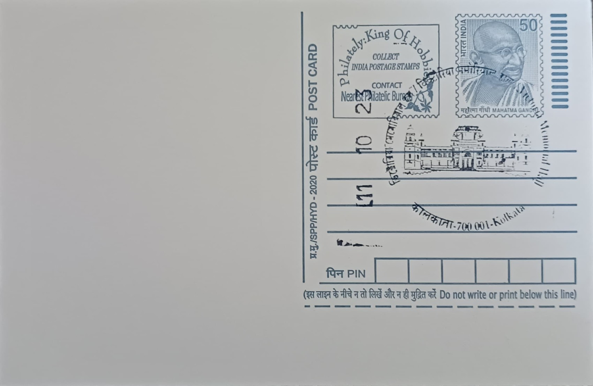

Victoria Memorial Hall
ভিক্টোরিয়া মেমোরিয়াল হল


The monument takes its name directly from Queen Victoria, Empress of India, in whose memory it was proposed shortly after her death in January 1901. The idea originated with Lord Curzon, then Viceroy, who argued that Calcutta, as the capital of British India, deserved a grand national memorial funded not by the state but by the goodwill of its subjects, both British and Indian. The foundation stone was laid by the Prince of Wales, later King George V, on 4 January 1906, fixing the memorial's origin in an act of imperial ceremony rather than religious or local legend, and giving the building its enduring identity as a monument conceived in Victoria's name but built through public subscription.
Victoria Memorial Hall belongs to the category of colonial-era commemorative monuments later converted into a public museum, and its significance rests on this dual identity. It was envisaged simultaneously as a tribute to the queen-empress and as a repository of Indian history under British rule, a combination that made it unusual among memorials of its time. Today it is administered as an autonomous institution under India's Ministry of Culture and ranks among the country's most visited museums, drawing several million visitors a year. Its importance is historical and curatorial rather than religious, resting on its role as one of the principal archives of Kolkata's colonial past and of the independence movement that followed it.
Construction proceeded between 1906 and 1921 under the architect William Emerson, with Vincent J. Esch serving as supervising architect on site, in an Indo-Saracenic style that drew on British classical, Mughal, Venetian, Deccani and Islamic elements. The structure is faced in white Makrana marble from the same Rajasthan quarries used for the Taj Mahal, and its total construction cost of roughly one crore five lakh rupees was raised entirely through voluntary donations from the public and from princely states, with no government funds involved. The finished building and its surrounding grounds together occupy about 64 acres, including the museum structure, six water bodies, paved walkways and roughly 2,800 trees and shrubs representing some 80 species, making it as much a landscaped garden complex as a single edifice.
The memorial's most distinctive feature is the bronze Angel of Victory, a 16-foot figure by the sculptor Charles Sargeant Jagger's contemporary Lindsay Clarke, cast by H.H. Martyn & Co. of Cheltenham and installed atop the central dome in 1920, nearly a decade after the building's inauguration. Mounted on ball bearings, the figure functions as a working weathervane, turning to face the wind whenever gusts reach roughly 15 to 20 kilometres per hour, a mechanical detail unusual for a monumental sculpture of its scale. The hall was formally opened to the public in 1921 by the Duke of Connaught, by which time its intended role as an imperial showpiece had already begun to shift toward that of a historical museum documenting the very period of British rule it had been built to celebrate.
The museum today holds roughly 28,000 artefacts and some 3,900 paintings across 25 galleries, including works by Tilly Kettle, Johan Zoffany, and the landscape painters Thomas and William Daniell, alongside manuscripts, sculptures, arms, coins and postal and philatelic material documenting Bengal's colonial and nationalist history. Its grounds have in recent years hosted an evening sound-and-light presentation projected onto the marble facade using laser technology, recounting the history of the city under the title 'Kolkata: The City of Joy.' Administered by a trust under the Ministry of Culture, the Victoria Memorial continues to function as both a working museum and a public garden at the heart of the city, with Kolkata GPO, a short distance away, long serving as the postal landmark most closely associated with it on cancellations and philatelic material bearing its name.
| Date of Introduction | October 11, 2023 |
|---|---|
| Address | Senior Postmaster, |
| Kolkata GPO, | |
| Kolkata (dt.), West Bengal - 700001. |